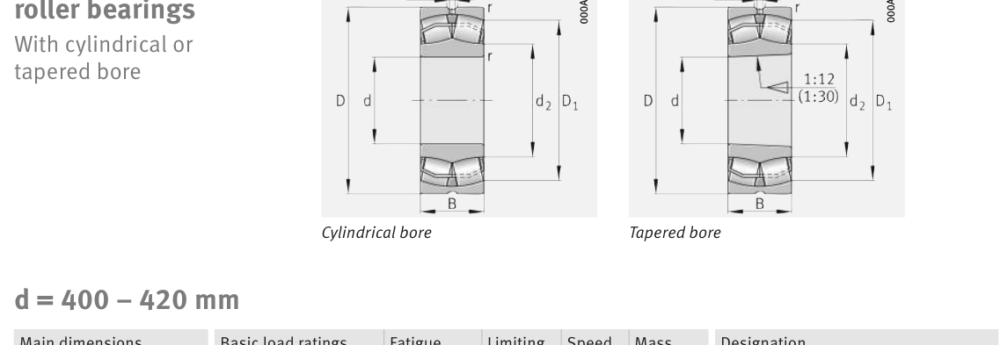

Original catalogue drawing - FAG Schaeffler HR 1, page 732

Scanned from the manufacturer catalogue page listing this part number. All part numbers printed on that table share the same drawing.
Scale cross-section
Blue = inner / outer ring, yellow = rolling element. Drawn to scale from this part's own
dimensions for selection reference only - not a manufacturing or assembly drawing.
Dimension table (mm / inch)
Symbol
Dimension
mm
inch
d
Bore diameter
400
15.748
D
Outside diameter
540
21.2598
B
Inner-ring / bearing width
106
4.1732
r
Chamfer (min)
4
0.1575
Notes
Weights are given in kg. Load ratings are shown in both the original catalogue units and the converted value (1 N = 0.2248 lbf). Data is provided for selection reference only - confirm against the latest official catalogue before ordering.
Main dimensions
Bore d (mm)
400
Outside dia. D (mm)
540
Width B (mm)
106
Inner-ring shoulder dia. D1 (mm)
499
Load ratings & speeds
Basic dynamic load rating Cr (lbs)
411400
Basic static load rating Cor (lbs)
932957
Basic dynamic load rating Cr (N)
1.83e+06
Basic static load rating C0r (N)
4.15e+06
Fatigue limit load Cur (N)
270000
Factor e
0.18
Factor Y0
3.63
Limiting speed nG (rpm)
1,290
Reference speed nB (rpm)
710
Weight
Weight (kg)
72.9
Mounting dimensions (fillets / shoulders)
Housing fillet r max (mm)
4
Shaft shoulder da (mm)
414.6
Housing shoulder Da (mm)
525.4
Housing fillet ra max (mm)
3
Bearing life (ISO 281 basic rating life)
C / P
Equivalent load P (N)
L10 (106 rev)
L10h at 400 rpm
4
457,500
102
4,233
6
305,000
392
16,354
8
228,750
1,024
42,667
10
183,000
2,154
89,768
15
122,000
8,323
346,811
Basic rating life per ISO 281: L10 = (C/P)10/3 with C = 1,830,000 N. Hours = L10 x 106 / (60n). Life-modification factors for lubrication, contamination and temperature (aISO) are not included.
Source & traceability
Brand
FAG
Source catalogue
FAG / Schaeffler Rolling Bearings HR 1
Catalogue page
p.732 (dimensions)
Load ratings in newtons, fatigue limit load Cur, limiting speed nG and reference speed nB.
Send us the quantity you need and we will come back with price and
lead time, normally within 24 hours. Equivalent parts from other brands can be quoted at the same time.